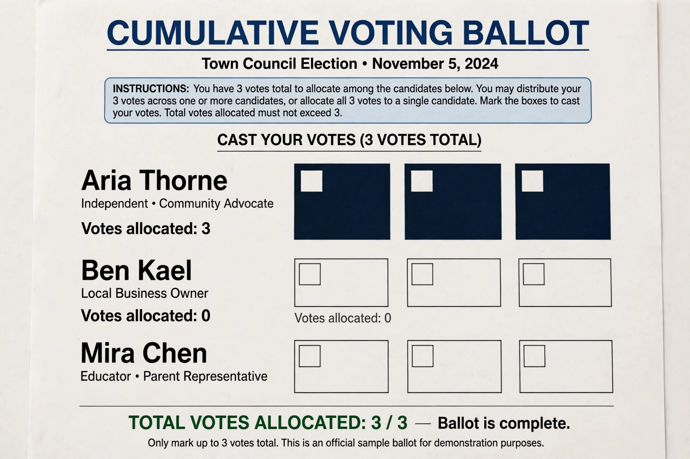

From Wikipedia, the free encyclopedia
Cumulative voting (also called accumulation voting or weighted voting) is a multiple-winner voting system intended to promote proportional representation without party lists. Each voter has as many votes as there are seats to fill and may distribute them among candidates in any proportion — including giving all of them ("plumping") to a single candidate. The candidates with the highest totals win.
Because votes can be concentrated, a cohesive minority can guarantee itself representation: in an election for n seats, a group making up more than 1/(n+1) of the electorate, voting cumulatively for one candidate, cannot be shut out — the same threshold logic as the Droop quota. Cumulative voting is therefore classed as a semi-proportional system.

The most prominent use was the Illinois House of Representatives (1870–1980), elected from three-member districts in which each voter had three votes; the system reliably produced bipartisan delegations from most districts and was abolished by the 1980 "Cutback Amendment". Cumulative voting is required or permitted for some corporate board elections (shareholders may concentrate votes on one director), and in the United States it has been adopted by various local governments — including jurisdictions in Alabama, Texas and Illinois — often as a remedy in Voting Rights Act cases to give minority communities a fair chance to elect representatives. It also appears in some school board and municipal elections.
Cumulative voting rewards coordination: groups must decide how many candidates to back and how to split votes, and over-nomination or uneven allocation wastes support — an organisational analogue of strategic voting. Supporters argue it achieves proportional outcomes with a simple, candidate-centred ballot; critics note the results depend heavily on groups' ability to coordinate.
Categories: Semi-proportional representation · Electoral systems